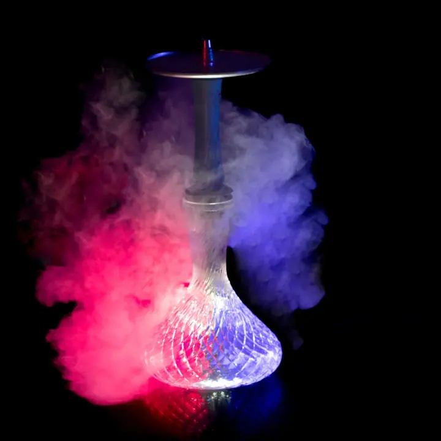
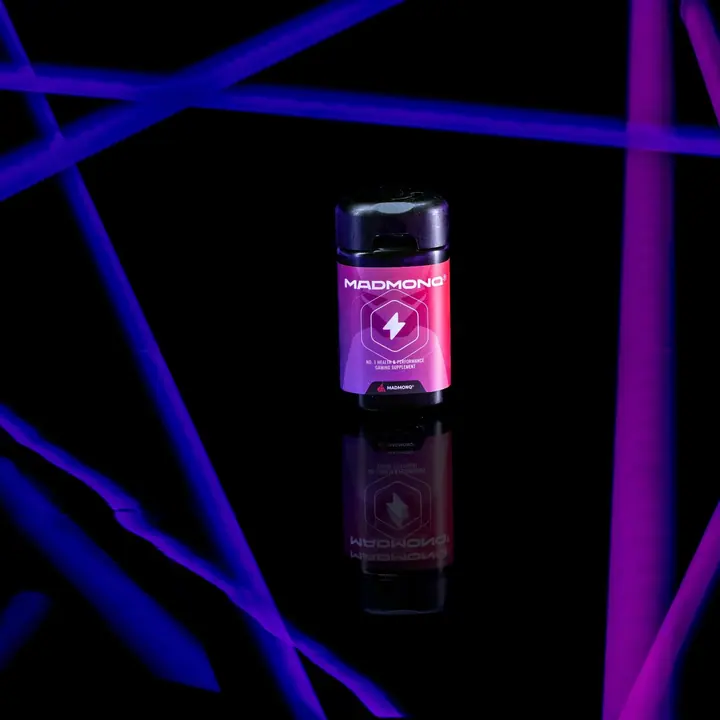
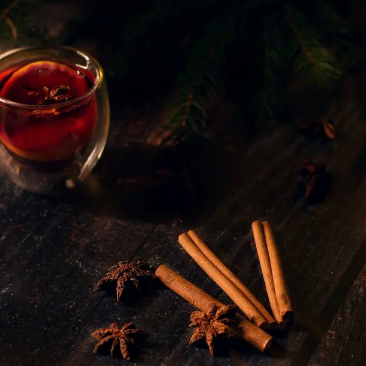
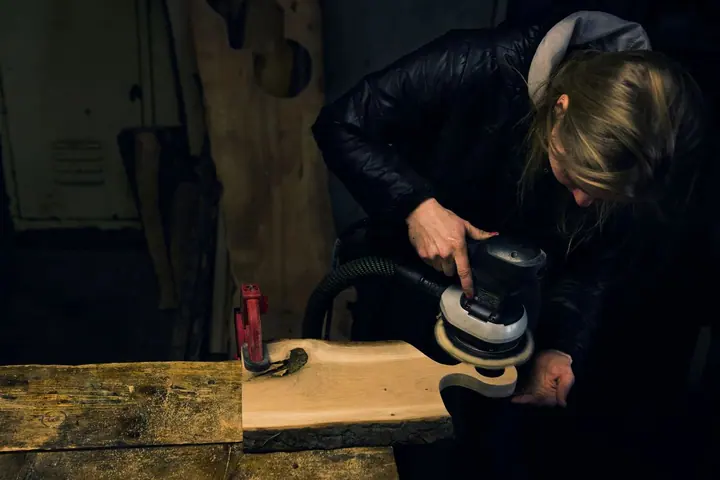
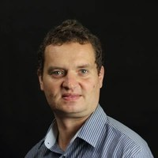

01 / 04
Akce, eventy a závody
Fotím akční scény a reportáže z vašich akcí, eventů i terénních závodů. Zachytím dynamiku a atmosféru, ať je venku jakékoli počasí.
Zeptat se na termín→



Z obyčejného neobyčejné
Zeptat se na termín →(01) Ahoj
Jmenuji se Libor Šuhajda a tvořím vizuály, které mají duši. Fotím produkty , akce a eventy i lidi při práci ve výrobě . Pomáhám značkám i jednotlivcům zazářit, kreativně, smysluplně a profesionálně.
(02) Co fotím
01 / 04
Fotím akční scény a reportáže z vašich akcí, eventů i terénních závodů. Zachytím dynamiku a atmosféru, ať je venku jakékoli počasí.
Zeptat se na termín→02 / 04
Vaše produkty nafotím u mě ve studiu, ve vaší firmě nebo přímo v terénu. Hledám způsob, jak obyčejné věci ukázat neobyčejně.
Zeptat se na termín→03 / 04
Zachytím dynamiku a detaily každého kroku vašeho výrobního procesu. Vznikne autentický a poutavý obraz vaší práce.
Zeptat se na termín→Dále nabízím
Vašemu projektu dodám kompletní vizuální tvář, která dává smysl. Od loga a grafiky až po fotky a celý brand.
↗(04) Postup
Od první zprávy po hotovou galerii.
Krok 1 z 4
Před focením se potkáme osobně nebo na online hovoru. Vyjasníme si vaše potřeby a hlavně vaše představy, jak by měly fotky vypadat.
Krok 2 z 4
Domluvíme, kde budeme fotit: u mě ve studiu, ve vaší firmě, na akci nebo v terénu. Na počasí se neohlížím.
Krok 3 z 4
Hledám, jak váš produkt, akci nebo výrobu ukázat neobyčejně. Hlídám dynamiku i detaily.
Krok 4 z 4
Fotky vyberu, upravím a předám vám je připravené k použití na webu, v kampani nebo na sociálních sítích.
Vizuální identita, která přežije i v divočině.
(05) Za objektivem
Jsem fotograf do nepohody. Nečekejte ode mě sterilní korporátní fotky na čistém pozadí. Tvořím autentický a dynamický obsah pro značky, které žijí outdoorem, pohybem a akcí, a nevadí mi vyrazit do terénu, na závody nebo na samotu.
Ať jde o produktovou fotografii, grafiku nebo reklamní kampaň, vždy hledám způsob, jak obyčejné věci ukázat neobyčejně. Produkty fotím u sebe ve studiu, ve vaší firmě nebo tam, kde opravdu žijí.
Spojuji techniku, cit pro detail a nadhled, aby vznikl vizuál, který funguje a baví. Kromě focení dělám i grafiku a loga, takže vašemu projektu umím dodat celou vizuální tvář.

Libor
Libor Šuhajda · Fotograf eventů, produktů a reklamy
Produktová a reklamní fotografie začíná na 750 Kč. Přesnou cenu vám řeknu podle počtu produktů a toho, co od fotek čekáte.
Focení akcí a reportáží z výroby vychází podle rozsahu zhruba na 6 000 až 18 000 Kč.
Ano. Produkty fotím ve studiu, ve vaší firmě nebo v terénu, a akce a závody přímo na místě, klidně i v nepohodě.
Ano, fotím interiéry i exteriéry nemovitostí pro prodej nebo pronájem, třeba glampingy a ubytování na samotě. Cena se pohybuje od 1 000 do 9 000 Kč.
(07) Kontakt
Napište pár vět o tom, co si představujete, a termín, který se vám hodí.